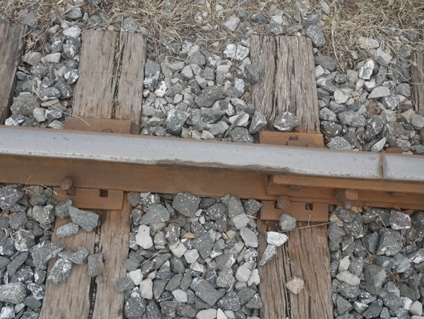
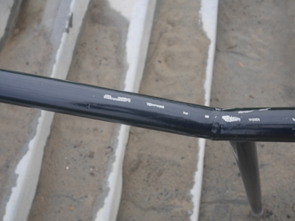
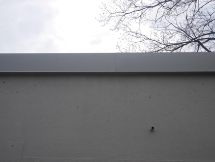

![A futuristic scene depicting a team of professors, wearing academic robes and holding pointers, lecturing a group of professional athletes in sports uniforms aboard the bridge of an intergalactic spaceship. The bridge features high-tech controls, large viewports showing stars, and holographic displays. The professors are diverse in ethnicity, with some male and female members, and the athletes represent a variety of sports like basketball, football, and soccer. The interior is sleek, with metallic surfaces and ambient lighting.](images/media/image8.jpeg)

Andrew Marble
marble.onl
andrew@willows.ai
April 13, 2024
The progress we’re seeing in Gen AI is skewed heavily towards what can be done without getting up from the computer. This means optimizing training algorithms and, at best, automated data curation. Most are “takers” – stuck with what data is already available and trying to make the most of it. Companies that are winning, particularly OpenAI, are making the data sets they need. A focus on data, particularly data that you need to leave your desk to get, is what’s going to continue to differentiate Gen AI offerings.
At my last company, we were improving computer vision AI for manufacturing problems. The challenge was a lack of data. You’d think manufacturers would have lots, but it often ended up being millions of pictures of the same thing over and over again. This makes it challenging to build a robust model that handles edge cases. We spent a lot of time and effort trying to algorithmically engineer better models, and made incremental but limited progress. We tried synthetic images, adding data from public data sets, better pre-training, techniques to force models to generalize, and more. Then one day I got a camera and started taking pictures for myself. I was interested in “surface defects” like cracks, scratches, discoloration, chips, etc. So I started by going outside and taking pictures of anything that looked like a defect.
|  |  |  |
Almost immediately, with a few dozen good images collected and labeled, I could build a model that generalized better than any of the past things we’d been trying. I spent a bit more money and bought some random metal parts from the hardware store and some craft supplies and created, photographed and labeled a whole set of images of the defects I was interested in. And built a set of models that outperformed anything I’d seen and were able to identify defects in different classes with no input data from the customer. (Without going on too much of a tangent, it’s fun to note that the GPU cost of generating specialized training data was often as much or more than going out and building physical examples of what I wanted.)
AI is still a very academic and theoretical discipling. It’s a generalization, but practitioners favor things they can do from their computer. Not that algorithmic improvements aren’t important. But they’re not what makes the “front end” of an AI product. That’s still data, specifically good data. What we call AI is really just an effective way of storing and querying a labeled data set. It generalizes, so the query and the output can be very flexible, but fundamentally the data needs to be there.
In the context of current Gen AI models, it was famously said that OpenAI has not moat1. But somehow GPT-4 (to stretch a bad analogy) has been under siege for over a year and held out. We keep seeing models come close on some dimension or another, and I’ve seen arguments that Anthropic performance has caught up, but GPT-4 remains the industry leader. Almost every day, new closed and publicly available models advertise new training and data curation techniques that result in incremental improvements in their performance (cynically, often against a cherry picked set of benchmarks and comparators). We’ve seen RLHF give way to DPO and now to DNO2. With respect to the latter technique, to give a taste of the kind of qualifiers we see on these new results, after controlling for response length they beat an older version of GPT-4 on AlpacaEval. Hard to get more definitive than that.
What isn’t discussed enough is that OpenAI has a huge moat in the form of data. Details are scant, but it’s clear they have invested more than anyone else, especially the research and public models, in gathering and curating their own data sets. The evidence is in the quality but also the tone and diction of the responses. There are now lots of examples showing how prevalent GPT-4 written article are, looking at the frequency over time of dead giveaway terms like “delve3” “commendable4”, etc. And of course there are all the cliché adjective-verb constructions and “it is crucial to remember that” caveats. All that didn’t emerge, it was carefully trained in by an army of data labelers. The same holds for image generation. All the Dall-E images now look very similar across prompts.
|
|
|
The quality is great, but it’s all the same people, the same computers, the same style. We see this stuff all over the internet. It’s clear they very intentionally curated a good data set to generate these styles – compare it to some of the Stable Diffusion models trained on noisy web data and the difference is obvious.
All this to say, OpenAI clearly gets what is important in building good models, and it’s that focus that’s kept them ahead over everyone else. All the incremental research helps, but my suspicion is that most model development has skewed heavily towards the practitioners’ preference of tackling problems that can be solved from a desk. Look at all the models that are trained on data sets generated by GPT-4 itself. My personal experience is that the way to make big progress is to get your hands dirty and go out and collect the data you need, and I’m convinced this applies to advancing Gen AI as well. It’s worked for OpenAI.